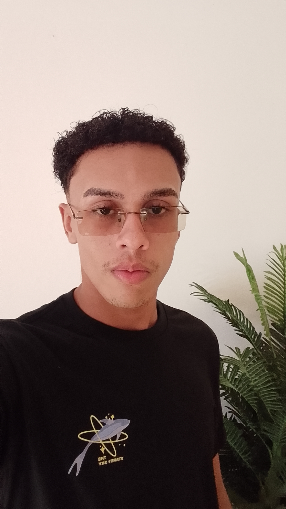

Olá, eu sou
Waldyr Araujo
Jovem aprendiz de T.I · Estudante de TI
Tenho 19 anos sou muito interessado na área de tecnologia por que gosto de tentar entender como as coisas funcionam. Atualemente sou jovem aprendiz de T.I e estou aprendendo muito sobre sistemas operacionais e a parte de hardware. Adoro me aventurar em coisas novas que parecem ser atrativas ou que venham a somar algo para minha carreira pessoal, acadêmica ou profissional.
Entrar em contato
Interesses & Hobbies
Java
No momento a liguagem que mais tenho vontade de aprender a fundo é o Java, por conta do mercado de trabalho e a complexidade da liguagem me chama atenção.
Leitura
Livros de ficção, romance, filosofia e leitura técnica sobre tecnologias.
Games
Gosto muito de jogos multiplayer, metroidvania, plataformas.
Música
Toco violino e sou instrutor de violino na minha igreja. Meu gosto musical é bem diversificado, mas ultimamente estou escutando mais MPB, Reggae, Trap, Rock brasileiro
Cozinhar
Amo cozinhar no meu tempo livre ou em um dia oportuno, gosto sempre de tentar cozinhar algo novo e para mim é como se fosse uma forma de distração